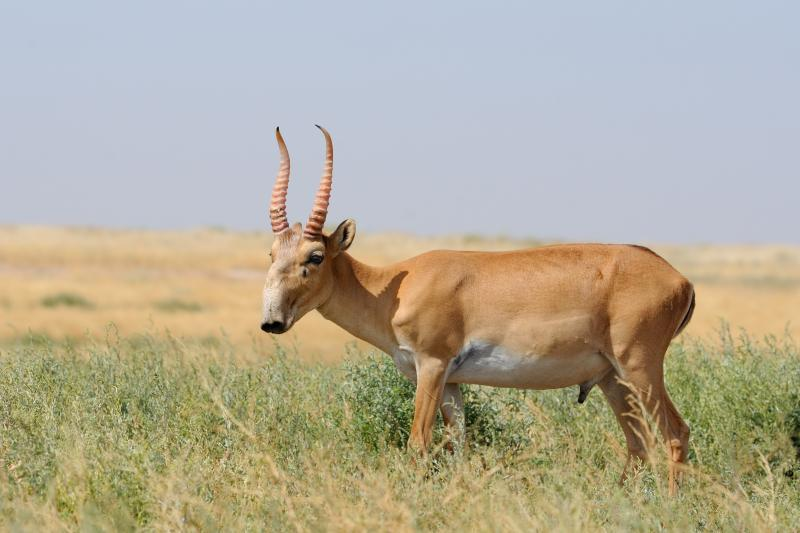

Antilopa Saiga
In Romania
Singura specie de antilopa care a populat teritoriul Romaniei este acum in stare critica de disparitie. După anii 1960, specialiştii au mai semnalat doar câteva exemplare izolate de antilope saiga, în Moldova şi Delta Dunării. Acestea mai trăiesc acum într-o mică rezervaţie naturală în Lunca Prutului, din judeţul Botoşani.
Descriere
Această „antilopă-capră” asiatică de mărime mijlocie are bot umflat, cu nări îndreptate în jos, probabil pentru a controla temperatura corpului şi/sau a avea un simț ascuțit al mirosului. Blana deasă şi lânoasă este galbenă-închis scorțișoară în partea de sus, mai deschisă jos şi se îndesește foarte mult in timpul iernii.
Trăiește în stepa secetoasă şi se hrănește cu diverse plante. Grupuri mai mici se adună în turme uriașe pentru migrare. Doar masculii au coarne.
| Caracteristi genereale | |
|---|---|
 |
Populatie in lume |
| 164,600-165,600 | |
 |
Inaltime |
| 100-150 cm | |
 |
Greutate |
| 26 – 69 kg | |
 |
Habitat |
| Stepa secetoasă din centrul asiei si estul europei | |
| Mai multe detali aici | |